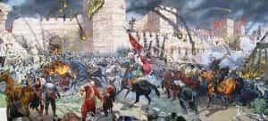
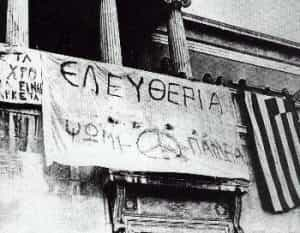

< < < Back
How Did The Situation In Greece Get To Be So Bad? – Return Of Kings
Greece is the most surreal country in the world—its defying of logic can hardly be found anywhere else. It is a place where East meets West and the Greek people have adopted some of the worst qualities of both, but not even a single good one from each one. Greece is in no better situation than the rest of Europe, in fact under many cases it is in a much worse one.
The Ottoman Influence

The Fall of Byzantium and the Ottoman Conquest of Greece. The beginning of Greece’s Troubles.
This is the basis for the development of the modern Greek mind. Everything happened because the Ottoman Turks conquered the Eastern Roman Empire (Byzantium). That had a great impact because most scholars and a part of the nobility (from which most scholars came) fled to Europe. That meant that for the next 400 years there was no development of Greek thought and language—in truth, there was deterioration. The Greek language has lost many of its significant characteristics and most of its abilities in writing, even it’s highly articulated pronunciation that was fathered in the middle ages. The lack of competent scholars led to the not developing of the needed words for such conversation.
Political Apathy
Politically the problem was the influence of the devlet. The devlet is the oppressive Arabic state (dawlat in Arabic) that the Ottomans applied to their general governorship. The devlet created a servile, but unruly, character to any people that were ruled by it. In short the people have lost any political inclination, which made them expect only an economic relationship with the state. For this reason, Greeks politically are apathetic to any issue, except if it concerns their pockets, while having a tendency to rebel for any small issue but never for a serious one.
Phillo-Ottomanism
Surprisingly there was also the development of a Stockholm syndrome with the Ottomans by the neo-Orthodox school of thought in Greece. That was phillo-Ottomanism. The neo-Orthodox was a right-wing school with leanings to the church, whose most members were ex-socialist or ex-Marxists (or Trotskyists) or ex-communists (communism in Greece is Stalinist). These people believed that the Ottomans unwillingly helped the Greek people to develop their own culture on their own terms, making it unique! They consider that in the end it was a good thing that Greece was cut off from any European influence and developed a peasant culture. In conversations with commoners in the country, a simplified version of these beliefs is a frequent occurrence.
Greek Orientalism
This in time lead to Orientalism: In Greece people feel closer to Turks and Arabs than Europeans. In Greece culture was mostly imported: literature from France for a great part of the 20th century, music from the middle east and India, series from Turkey now in modern times. This phenomenon has led to the eradication of reason from the Greek mind. Greeks have only emotional reactions and their vindication towards political folly remains verbal. Also it is the reason why most Greeks shout for communication and are easy to pick a fight with.
Greek Marxism

Freedom-Bread-Education: the banner of the Greek Left
The only times when Greek scholars came to the right were in the beginning of the previous century, and all of them studied either in Germany, Russia, or Italy. The problem with them was that they did not write philosophy, only treatises on self-governorship or comments and funny articles on newspapers. Leftists though took complete control of academia and the culture in Greece. Everything had to be based upon their beliefs. In Greece public universities are geared to creating communists and anarchists from the 70’s, the Junta did not manage to remove them from these positions.
The only difference that has been noted from the 80’s is that the universities have become recruiting groundd for the two main parties, so they also produce Pasokists (now Syrizaists) and New Democratics (cuckconservatives) all in all it is mainly geared to leftism.
Feminized Culture
Literature in Greece survived in its Greek form by lowering its standards and mimicking the orient. Specifically it relied on overt expressions of emotion but with some sexual degeneracy to subsidize westernization. Series also took that road long before Turkish TV series appeared. Also, even the old Greek movies primarily based themselves on this formula. An interesting thing is that the 80’s were the last time Greece produced action oriented material through its cinema or its fledgling television. Later the complete takeover or sex-comedies and soap-operas dramatic series took place.
Far more importantly, in the country gun laws are some of the most restrictive in the world. For owning even a shotgun (a hunting gun here) a specific diploma is required, while self-defense is highly discouraged by the law. The problem though stands true even for the policemen, as they do not know when and how they are allowed to use their guns! Lastly in Greece the culture that surrounds the military is highly hostile. In fact, we do not want to have an army and many Greeks cannot even understand its use! This has led to its deterioration.
A Lack Of Seriousness
All these point to the fact that in Greece nothing is taken seriously. Our borders, our economy, our defense, our culture, our religion, our education, our policing, near nothing is taken seriously… ‘til the excrement hits the fan. This is a product of Orientalism in Greece, but also points to another great problem. In this country the education system has been deteriorating for the last 30 years at least. Greeks do not learn even how to avoid mistakes with their language, not even in the universities. Journalists make juvenile mistakes in grammar, syntax, even inflection (Greek is a fusional language like German, or Russian, or Italian)!
Literate Illiteracy
This is the most important part: here you’ve got no choice. That’s it. The schools do not teach anything right. The teaching of Greek and history in schools is so bad that some parents teach these subjects to their kids themselves, to alleviate the effects. I need to point out that homeschooling was never legal here and won’t be legalized. I also need to underline the fact that boarding schools do not exist, while private schools are forced to have the exact same curriculum as the public ones. The only reason they exist is that they better look after the kids and control the courtyard.
This brings to a situation in which most people younger than 50 have at least a diploma, and on paper they should be of the most literate people in the world. When literacy is being counted they try to find how many books one person has read in his life—half of Greeks have read only one. Most works of economy, self-improvement, philosophy and politics are just out of reach for the vast majority, as relatively few works are being translated.
Greek “Nihilism”
Andreas Papandreou, still reigning from the dead.
After the fall of the junta in the mid-70’s Greece started a transformation to its political game. The two main parties could not support the changing paradigm, as a man came that awoke Greeks from their apathy. That man was Andreas Papandreou and his nemesis was Konstantinos Karamanlis, the bringer of democracy. These men were so popular at their time that in some cases holy icons were replaced by their portraits. In the end though the truly influential was the first.
Papandreou made Greeks actively vote on the promise of them being put to work in the public sector (they cannot fire you from it) and on giving them money from the economic EU handouts. He promoted also all the lifestyle magazines, which changed Greek culture dramatically during the 90’s when they became influential. In the end the average Greek cannot comprehend anything but: money, food and sex. These magazines required 10 years to see any significant success in Greece, but when that happened, with the help of PASOK on their start, Greece ceased to be a traditional society. Even worse politically if one wants to rule over Greece he cannot have the votes if he doesn’t follow the political paradigm of Papandreou. This makes Greek politics totally unable to adapt to any developing situation!
Political Holy Relics And Prideful Misery
This has led to the creation of political blasphemy. In Greece one may not touch the public sector, except the army and the police, due to our culture of constant rebellion. One may never touch public businesses, or sell public land. That is a problem because the public sector rarely manages anything properly. A good example is the “Elliniko,” a vast amount of land that used to be an airport 20 years ago. It has been left to rot ever since, and even the idea of giving it to an entrepreneur to make resorts is preposterous to the Greek mind.
Last many Greeks have some sort of pride in misery. If a Greek takes any service from the public sector and does not have money for the private, for some reason he takes pride in it. But it is not the pride like “my country gives healthcare to everyone” but “public services are much better than private ones.” That occurrence is personally referred also the “public medallion.” It is needed to point that wealthy leftists work always on the public sector, or develop close ties to it, and take all their services from the private one. For the ones working in the public sector, many of them figuratively beg politicians for a job with no prospects with the basic salary (500€ and you cannot support a family with it) and are proud for it.
Fads As The Only Motivation
This leads the final observation: after the fall of the junta there appeared, like from nowhere, democratism. The democratists were people who believed in democracy but from an anti-junta perspective. The junta said it valued three things: Fatherland, Religion and Family. The democratists preached against these while their believers were called fascists. In the end it was not a serious movement and in time it passed. The problem is that even the ones following did not really lived up to their beliefs, they were only preaching them.
Celebrating Misery, Lies and Corruption: The modern Greek youth has no idea. The image is from a SYRIZA rally
Today, that fad is anti-racism. While most “racists” will not suffer repercussions, as this will happen only if the incident goes to the news, it is a fad to support “refugees”. The fact is, no one wants to deal with them and everyone throws them to the next person, like a hot potato, so that he can deal with them.
This in time will pass, but it will leave many problems to be solved. Whether Greece is capable of solving them remains to be seen.
Read More: This Accidental Experiment Shows The Superiority Of Patriarchy